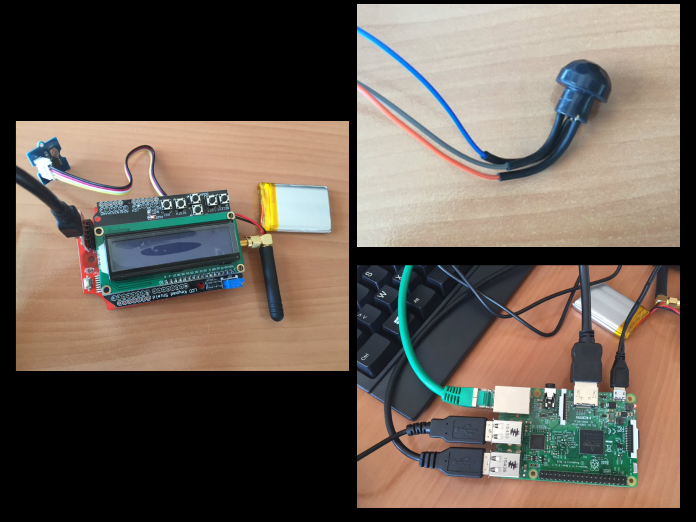
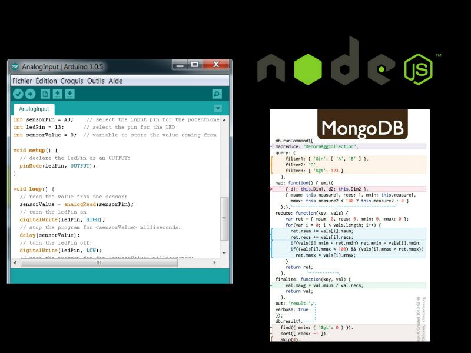

Majordome
Trophée Objets Connectés et Services
Edouard KABIA - Maxime MERIMEE
Pour éviter
Majordome
Objectif
- Faire un dispositif de détection de mouvement pour une salle de réunion
- Si la personne qui a réservé la salle ne s'y rend pas elle recevra un mail pour lui rappeler sa réservation
- Si la personne ne répond pas la salle redevient disponible
Matériel
- Raspberry Pi 3
- Kit Lora
- Capteur de mouvement Panasonic
Présentation Matériel
Utilisation de Fun-Plan

Outils utilisés
- L'OS Raspbian sur le Raspberry Pi 3
- Gedit
- Frameworks

Logiciels Utilisé
- Node JS
- MongoDB
- Datavenue
- Arduino( Programmation Kit Lora) 
Cas d'usage: Connexion

Réservation

Merci pour votre attention